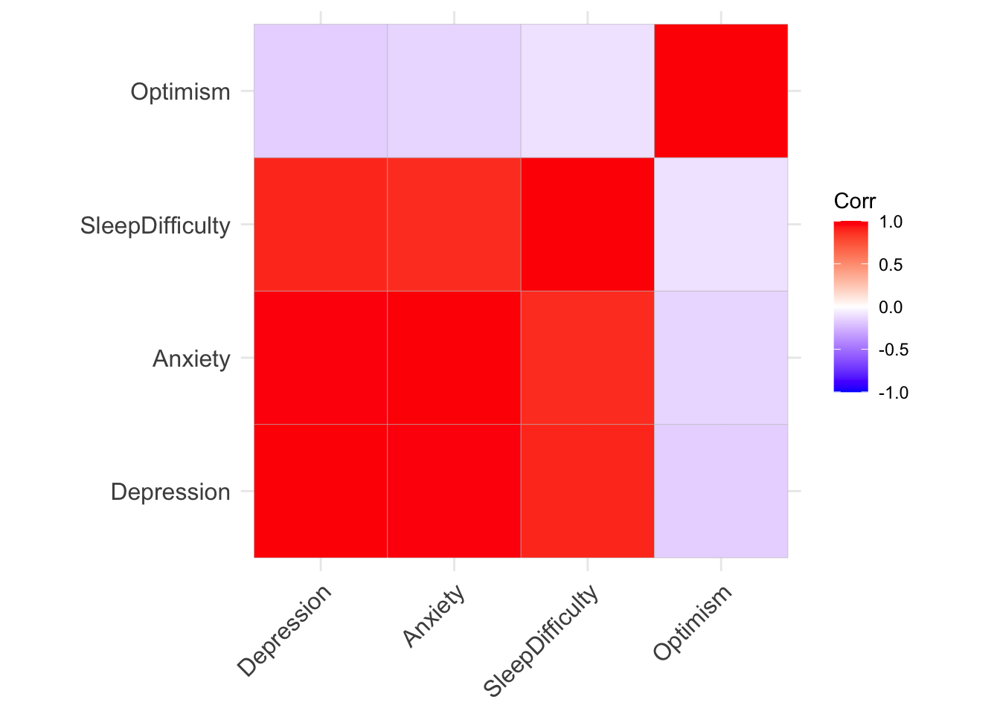

getwd()[1] "C:/Users/0131045s/Desktop/Legacy/Programming/R/Workshops/rintro/activities/week5"In this week’s workshop, we will learn how to examine relationships between variables using correlation analysis. We will focus on both simple correlations (between two variables) and multiple correlations (between several variables), and we will learn how to:
- Run descriptive statistics and check assumptions using jmv
- Conduct a simple correlation in R.
- Conduct a multiple correlation R.
- Produce clear and informative correlation plots
- Conduct an a priori power analysis for correlations
As a reminder, there are three types of correlations, as illustrated in the image below.

Let’s begin by ensuring your working environment is ready for today’s session. Open RStudio or Posit Cloud and complete the following tasks to set everything up.
One of the first steps in each of these workshops is setting up your working directory. The working directory is the default folder where R will look to import files or save any files you export.
If you don’t set the working directory, R might not be able to locate the files you need (e.g., when importing a dataset) or you might not know where your exported files have been saved. Setting the working directory beforehand ensures that everything is in the right place and avoids these issues.
Click:
Session → Set Working Directory → Choose Directory
Navigate to the folder you created for this course (this should be the same folder you used for previous workshops).
Create a new folder called week5 inside this directory.
Select the week5 folder and click Open.
Don’t forget to verify your working directory before we get started. You do this by typing in the following command into the console
getwd()[1] "C:/Users/0131045s/Desktop/Legacy/Programming/R/Workshops/rintro/activities/week5"As in previous weeks we will create an R script that we can use for today’s activities. This week we can call our script 05-correlations
Go to the menu bar and select:
File → New File → R Script
This will open an untitled R script.
To save and name your script, select:
File→ Save As, then enter the name:
05-correlations
Click Save
To make the output of our results appear more intuitive, we are going to turn off scientific notation. Scientific notation is a way of minimising space when reporting results with multiple decimal places. For example, if p = 1.1e-7, this corresponds to p = 0.00000011 (i.e., the decimal point is moved seven places to the left). In psychological research, extremely small p-values are typically reported as: p < .001. Therefore, scientific notation is not necessary for our purposes. We can turn it off by running:
options(scipen = 999)Today we will use the following packages: • jmv for descriptive statistics and assumption checks • pwr for power analysis • car for additional assumption testing • correlation for running correlation analyses • performance for diagnostic checks • psych, ggplot2, and ggcorrplot for visualisations
REMEMBER: If you see the error - “Error in library(package name): there is no packaged calledpackage name”, you’ll need to install the package first by editing the following for your console:
install.packages("package name") #replace "package name" with the actual package nameNow load the required packages:
library(jmv) # this will help us run descriptive statistics
library(pwr) # this will enable us to conduct power analysis
library(car) # this is for checking assumptions
library(correlation) #this runs our correlation
library(performance) # this helps with our assumption checks
library(psych) # this will be helpful for our multiple correlation graph
library(ggplot2) #for generating plots
library(ggcorrplot) # for generating matrix correlation plotsToday we will analyse data from a study on sleep quality, personality factors, and psychological wellbeing. You will find the dataset on Canvas under Week 5.
week5 folder (this should be your working directory).Once the file is in your week5 folder, load it into R and save it as a dataframe called df_sleep.
df_sleep <- read.csv("SleepQuality.csv")This dataset comes from a cross-sectional study examining the relationship between sleep difficulty, anxiety, and depression.
Before doing any analysis, it is always good practice to quickly inspect your dataset. The head() function prints the first few rows:
head(df_sleep) Participant SleepDifficulty Optimism Depression Anxiety
1 1 12.32332 6.895218 25.73838 50.14666
2 2 12.03404 12.593687 26.36019 50.59385
3 3 12.05411 5.389429 27.75646 50.47726
4 4 13.47842 9.192558 25.01543 53.32908
5 5 16.32334 5.869162 32.23879 70.42495
6 6 18.55490 5.819719 36.75899 73.08169Now that our environment is set up and our dataset is loaded, we are ready to run descriptive statistics and check our assumptions (using the same descriptives approach you learned last week).
We are interested in examining the relationship between depression and anxiety.
Specifically, we predict that higher depression scores will be associated with higher anxiety scores.
H₀: There is no significant correlation between depression and anxiety.
H₁: Higher depression scores will be positively correlated with higher anxiety scores.
Because we are examining the relationship between two continuous variables, the appropriate analysis is a simple correlation.
Since our hypothesis specifies a direction (positive association), this is a directional hypothesis. Note that as we do specify the direction of the association / correlation that this is a directional hypothesis
There are two main types of correlation:
For this workshop, we will use Pearson’s correlation, provided its assumptions are satisfied.
Before running the correlation, we must check the following:
Interval data = Data that is measured on a numeric scale with equal distance between adjacent values, that does not have a true zero. This is a very common data type in research (e.g. Test scores, IQ etc).
Ratio data = Data that is measured on a numeric scale with equal distance between adjacent values, that has a true zero (e.g. Height, Weight etc).
Here we know our two variables are outcomes on a wellbeing test, as such they are interval data and this assumption has been met
A quick way to check this assumption is to see if there is any missing data. If there isn’t then this assumption is met. Note that number of missing data points is one of the values you automatically get when using the descriptives function.
Checking Our Assumptions
Both depression and anxiety are measured using psychological scales. These are treated as interval-level data, meaning the distance between values is equal. This assumption is therefore met.
A quick way to check for missing data is via descriptive statistics. If there are no missing values for either variable, this assumption is satisfied.
descriptives(df_sleep, # our data
vars = c("Depression", "Anxiety")# our two variables
)
DESCRIPTIVES
Descriptives
────────────────────────────────────────────────
Depression Anxiety
────────────────────────────────────────────────
N 150 150
Missing 0 0
Mean 25.05236 50.30168
Median 25.14149 50.21348
Standard deviation 6.173965 12.34318
Minimum 8.203621 16.32001
Maximum 40.04161 78.15740
──────────────────────────────────────────────── You can see that no participants are identified as “missing”.
Normality can be assessed visually (histogram and Q–Q plot) and statistically (Shapiro–Wilk test).
We can obtain descriptive statistics and check normality simultaneously:
descriptives(df_sleep, # our data
vars = c("Depression", "Anxiety"), # our two variables
hist = TRUE, # this generates a histogram
dens = TRUE, #draws a density plot over our histogram
sw = TRUE, # this runs shapiro-wilks test
qq=TRUE) # this generates a qq plot
DESCRIPTIVES
Descriptives
─────────────────────────────────────────────────
Depression Anxiety
─────────────────────────────────────────────────
N 150 150
Missing 0 0
Mean 25.05236 50.30168
Median 25.14149 50.21348
Standard deviation 6.173965 12.34318
Minimum 8.203621 16.32001
Maximum 40.04161 78.15740
Shapiro-Wilk W 0.9942665 0.9914144
Shapiro-Wilk p 0.8206004 0.5009269
───────────────────────────────────────────────── 


For the histograms, we are looking for a roughly “bell-shaped” distribution. It does not need to be perfect. Real data almost never are. What we are trying to avoid is:
For the Q-Q plot, here’s what to look for:
For both depression and anxiety, the points closely follow the diagonal line, with only very small deviations at the extremes. This suggests the distributions are very close to normal.
For the Shapiro-Wilk’s test, it gives us a p-value. That p-value tells us whether the data significantly deviates from a normal bell-shaped distribution.
Our result show that for both depression (W = 0.99, p = .82) and anxiety (W = 0.99, p = .50), both p-values are well above .05, which means there is no statistical evidence that either variable violates normality.
Looking at the histograms, the Q–Q plots, and the Shapiro–Wilk tests together, both depression and anxiety appear to be approximately normally distributed.
This means the normality assumption for Pearson’s correlation has been met, and we can proceed with the analysis.
Pearson’s correlation assumes that the relationship between variables is linear.
We can examine this using a scatterplot:
plot(df_sleep$Depression, df_sleep$Anxiety)
The points should form a roughly straight-line pattern rather than a curved pattern. Which they do, so we have linearity.
e. Homoscedasticity
Homoscedasticity means that the variability of one variable is similar across levels of the other variable.
There are a number of ways to check this assumption: visually via plotting of the residuals (which we will cover in Week 7 for Regression), or via a test. Here we will use a Breusch-Pagan test (1979) for heteroscedasticity.
To do this we will create a linear model, and then use the function check_heteroscasticity from the performance package.
If we get a non-significant p-value then the data is homoscedastic and our assumption has been met.
model <- lm(Depression ~ Anxiety, data = df_sleep) # here we are creating an object "model" which contatins a linear model of our DV ~ IV
check_heteroscedasticity(model) # this function performs a Breusch-Pagan test for our modelOK: Error variance appears to be homoscedastic (p = 0.771).We can see that our data does display homoscedasticity. We have met all our assumptions now.
As such we can use a Pearson correlation to test our hypotheses.
Now that we have checked our assumptions, we can run the correlation.
We use the cor.test() function in R. The basic structure and syntax of the code is:
#REMINDER: This is SYNTAX/PLACEHOLDER CODE - it will not work unless you substitute the values for your dataset
cor.test(
DataframeName$Variable1,
DataframeName$Variable2,
method = c("pearson", "spearman"), #we choose just 1, e.g. method = "pearson", method = "spearman"
alternative = c("two.sided", "less", "greater") #we choose one, e.g. alternative = "two.sided" or alternative = "less" or alternative = "greater"
)What do these arguments mean?
method = "pearson" → used when assumptions are met.
method = "spearman" → used if assumptions are violated.
alternative controls whether the test is:
“two.sided” → testing for any relationship (positive or negative)
“greater” → testing for a positive relationship
“less” → testing for a negative relationship
Because our hypothesis predicts a positive relationship, we will run a one-sided test using “greater”.
As we have a directional hypothesis where we expect a positive correlation we will run a one-sided correlation. Let’s run this correlation for depression and anxiety on our df_sleep dataset:
cor.test(
df_sleep$Depression,
df_sleep$Anxiety,
method = "pearson",
alternative = "greater"
)
Pearson's product-moment correlation
data: df_sleep$Depression and df_sleep$Anxiety
t = 56.595, df = 148, p-value < 0.00000000000000022
alternative hypothesis: true correlation is greater than 0
95 percent confidence interval:
0.9708085 1.0000000
sample estimates:
cor
0.977668 The correlation results show a significant correlation between the depression and anxiety scores.
Here’s how we might write up the results in APA style:
A Pearson’s correlation was conducted to assess the relationship between depression (M= 25.05, SD= 6.17) and anxiety scores (M= 50.3, SD= 12.34). There was a significant large positive correlation between depression and anxiety, r(148) = 0.98, p < 0.01. This indicates that higher levels of depression are associated with higher levels of anxiety. As such we can reject the null hypothesis.
It is always a good idea to represent our results visually. For a simple correlation, this would mean a scatterplot. while we already generated a scatterplot earlier, we can make it more informative and nicer to look at. For example, the following code will generate a scatterplot between Depression and Anxiety, with a title, appropriate labels for the x and y-axis, and a regression line of best fit.
plot(
x = df_sleep$Depression,
y = df_sleep$Anxiety,
main = "Scatterplot of Depression and Anxiety",
xlab = "Depression",
ylab = "Anxiety"
)
abline(lm(Anxiety ~ Depression, data = df_sleep), col = "blue", lwd = 2)
What each argument in plot() does
x = df_sleep$Depression → This sets the variable on the horizontal (x) axis.
y = df_sleep$Anxiety → This sets the variable on the vertical (y) axis.
main = → This controls the title of the graph.
xlab = and ylab = → These control the axis labels.
If you want to change variables, simply replace the x and y variables with different variables.
For example:
plot(
x = df_sleep$SleepDifficulty,
y = df_sleep$Depression,
main = "Scatterplot of Sleep Difficulty and Depression",
xlab = "Sleep Difficulty",
ylab = "Depression"
)
What does the code abline(lm(Depression ~ SleepDifficulty, data = df_sleep), col = "blue", lwd = 2) do?
This adds a straight line showing the best linear fit, where
lm(Anxiety ~ Depression, data = df_sleep) → This creates a linear model predicting Anxiety from Depression.
abline() → Draws the regression line from that model onto the existing plot.
col = "blue" → Changes the colour of the line.
lwd = 2 → Controls the thickness of the line (higher = thicker).
If you change the variables in your plot, you must also change them here to match.
For example:
plot(
x = df_sleep$SleepDifficulty,
y = df_sleep$Depression,
main = "Scatterplot of Sleep Difficulty and Depression",
xlab = "Sleep Difficulty",
ylab = "Depression"
)
abline(lm(Depression ~ SleepDifficulty, data = df_sleep), col = "red", lwd = 3)
In the previous activity, we examined the relationship between two variables (depression and anxiety).
However, we are often interested in understanding how several variables relate to each other at the same time.
In this dataset, we have four continuous variables:
Set 1: The Relationship with Sleep Difficulty with Depression and Anxiety
H₀: There is no significant correlation between sleep difficulty with depression, and anxiety.
H₁: Higher sleep difficulty will be associated with higher depression and anxiety.
Set 2: The Relationship with Optimism with Depression and Anxiety
H₀: There is no significant correlation between optimism with depression and anxiety.
H₁: Higher optimism will be associated with lower depression and anxiety
Instead of running multiple separate correlations one at a time, we can examine all relationships simultaneously using a multiple correlation matrix.
A multiple correlation allows us to:
The logic is the same as before, as we are still testing associations between continuous variables.
Before running the multiple correlation, we must ensure that all four variables meet the assumptions of Pearson’s correlation.
We already checked depression and anxiety earlier. Now we must also check:
For each variable:
Using the same steps as for the simple correlation, check the assumptions for the variables SleepDifficulty and Optimism.
descriptives(df_sleep, # our data
vars = c("Depression", "Anxiety", "SleepDifficulty", "Optimism"), # our four variables
hist = TRUE, # this generates a histogram
dens = TRUE,
sw = TRUE, # this runs shapiro-wilks test
qq=TRUE) # this generates a qq plot
DESCRIPTIVES
Descriptives
─────────────────────────────────────────────────────────────────────────────────
Depression Anxiety SleepDifficulty Optimism
─────────────────────────────────────────────────────────────────────────────────
N 150 150 150 150
Missing 0 0 0 0
Mean 25.05236 50.30168 12.37026 10.57763
Median 25.14149 50.21348 12.37819 10.76353
Standard deviation 6.173965 12.34318 2.736946 3.284548
Minimum 8.203621 16.32001 6.599527 0.4951533
Maximum 40.04161 78.15740 18.73516 18.83997
Shapiro-Wilk W 0.9942665 0.9914144 0.9846297 0.9912025
Shapiro-Wilk p 0.8206004 0.5009269 0.0937667 0.4788844
───────────────────────────────────────────────────────────────────────────────── 


If you want to try the pairs.panel function it enables you to check the visual assumptions for all the variables at once.
pairs.panels(df_sleep)
The pairs.panels() output shows:
When interpreting the scatterplots: - Look for a straight-line pattern (linearity) - Check that no extreme outliers dominate the relationship - Observe the direction of the red line (positive or negative)
The red ellipses in the scatterplots indicate strength: - Narrow diagonal ellipse = strong relationship - Wide circular shape = weak relationship
Now that we have checked the assumptions for all four variables, we can run a multiple correlation.
Instead of testing one pair of variables at a time, we will examine all pairwise relationships simultaneously.
We use the correlation() function from the correlation package.
# Remember you need to edit the specific names/variables below to make it work for our data and needs
correlation(DataframeName, # our data
select = c("Variable1", "Variable2", "Variable3", "Variable4"), # our variables
method = c("pearson", "spearman"), #we choose just 1, e.g. method = "pearson", method = "spearman"
p_adjust = "bonferroni") # our bonferroni adjustment for multiple comparisons - see the associated textbook chapter for a discussion of this
# Note that we do not specify the direction of our predicted correlation here as some may be positive and others may be negativeWhat do these arguments mean?
select → specifies which variables to include.
method = "pearson" → used when assumptions are met.
method = "spearman" → used when assumptions are not met.
p_adjust = "bonferroni" → adjusts p-values to control for inflated Type I error when running multiple comparisons.
When we run multiple correlations at once, we increase the risk of false positives. The Bonferroni correction makes the test more conservative to reduce this risk.
Note that we do not specify "greater" or "less" here, because some relationships may be positive and others negative. Therefore, this is effectively a two-sided test for each pair.
The following code runs the multiple correlation and saves it to the variable mcor. We are saving this information to a variable as we will need it later to generate a graph.
# we are saving the results of our correlation as an object called "mcor"
mcor <- correlation(df_sleep, # our data
select = c("Depression", "Anxiety", "SleepDifficulty", "Optimism"), # our variables
method = "pearson",
p_adjust = "bonferroni") # our bonferroni adjustment for multiple comparisons
mcor# Correlation Matrix (pearson-method)
Parameter1 | Parameter2 | r | 95% CI | t(148) | p
-------------------------------------------------------------------------------
Depression | Anxiety | 0.98 | [ 0.97, 0.98] | 56.60 | < .001***
Depression | SleepDifficulty | 0.90 | [ 0.87, 0.93] | 25.65 | < .001***
Depression | Optimism | -0.16 | [-0.31, 0.00] | -1.98 | 0.298
Anxiety | SleepDifficulty | 0.88 | [ 0.84, 0.91] | 22.47 | < .001***
Anxiety | Optimism | -0.14 | [-0.29, 0.02] | -1.73 | 0.515
SleepDifficulty | Optimism | -0.10 | [-0.25, 0.06] | -1.18 | > .999
p-value adjustment method: Bonferroni
Observations: 150Interpreting the Output
The output provides:
The correlation coefficient (r)
The p-value (adjusted using Bonferroni)
Confidence intervals
Key Findings
Depression and anxiety were very strongly positively correlated, r(148) = .98. p < .01.
Depression and sleep difficulty were strongly positively correlated, r(148) = .90, p < .01.
Anxiety and sleep difficulty were also strongly positively correlated, r(148) = .88, p < .01.
These indicate that higher sleep difficulty is associated with higher depression and anxiety, and that depression and anxiety are closely related.
In contrast:
Depression and optimism were weakly negatively correlated, r(148) = −.16, p = .30.
Anxiety and optimism were weakly negatively correlated, r(148) = −.14, p = .52.
Sleep difficulty and optimism were weakly negatively correlated, r(148) = −.10, p > .99.
These weak negative correlations were not statistically significant after Bonferroni correction.
How we might write up the results in APA style?
A Pearson’s multiple correlation test with bonferroni correction was conducted to assess the relationship between depression (M= 24.26, SD= 5.89), anxiety scores (M= 48.62, SD= 12.48), sleep difficulty (M= 12.37, SD= 2.74), and optimism (M= 10.58, SD= 3.28). The test showed that there was a significant positive correlation between sleep difficulty and depression, r(148) = 0.90, p < 0.01, and sleep difficulty and anxiety, r(148) = 0.88, p < 0.01. This result indicates that people experiencing poorer sleep quality are more likely to experience depression and anxiety. The test also showed that there was a significant positive correlation between depression and anxiety r(148) = 0.98, p < 0.01. Therefore one is able to reject the null hypothesis that there is no significant correlation between sleep difficulty with depression and anxiety.
It was also hypothesised that higher optimism will be associated with lower depression and anxiety. The test showed that there was no significant correlation between optimism and anxiety r(148) = -0.14, p = 0.52 or optimism and sleep difficulty r(148) = -0.1, p = >.99. Therefore, one is unable to reject the null hypothesis.
When analysing multiple correlations, reporting every correlation in text can quickly become overwhelming. A correlation matrix provides a clear visual summary of:
Today we will use the ggcorrplot() function to visualise the correlation matrix we created in Activity 7.
ggcorrplot(
mcor,
colors = c("red", "white", "blue")
)
What Does This Show?
Blue cells represent positive correlations.
Red cells represent negative correlations.
Darker colours indicate stronger relationships.
Lighter colours indicate weaker relationships.
This makes it much easier to see patterns across all variables at once.
The ggcorrplot() function has many optional arguments. If you type in ?ggcorrplot to your console you can see there are many optional arguments. Try make the following changes to your graph
ggcorrplot(
mcor,
type = "lower",
method = "circle",
lab = TRUE,
title = "Correlation Matrix of Psychological Variables",
colors = c("red", "white", "green")
)
ggsave()Rather than exporting manually from the Plots panel, it is better practice to save graphs directly using code. This improves reproducibility.
First, assign the plot to a variable name, then use ggsave() to export it.
corr_plot <- ggcorrplot(
mcor,
type = "lower",
method = "circle",
lab = TRUE,
title = "Correlation Matrix of Psychological Variables",
colors = c("red", "white", "blue")
)
ggsave(
filename = "correlation_matrix.png",
plot = corr_plot,
width = 8,
height = 6,
dpi = 300
)How ggsave() Works
filename → the name of the file to save.
plot → the name of the plot variable you want to save.
width and height → the size of the image (in inches by default).
dpi → resolution (300 is standard for reports and publications).
The file will be saved to your working directory unless you specify a different file path.
You may also want to save your graphs outside of R (e.g. to use in a report or paper). There are a few ways to do this.

Here we are going to learn about how to conduct a power analysis for a correlation.
As you may recall there are some key pieces of information we need for a power analysis, and some specifics that we need for a correlation:
Alpha level (typically 0.05 in Psychology and the social sciences)
The minimum correlation size of interest
Our desired power
If our test is one or two-tailed (i.e. do we have a directional or nondirectional hypothesis)
Reminder that this interactive visualization can be helpful in understanding how these things interact.
This is a good question! Correlation (r) values can be split into arbitrary bands as shown below (Cohen, 1988):
Small Effect (r = ~ 0.1)
Medium Effect (r = ~ 0.3)
Large Effect (r = ~ 0.5)
As we are aware it is easier to detect large effects. As such, if we really have no idea what effect size we should expect then we should power for small effects.
If however we are conducting a replication, or a very similar study to one that has been already done, then we can power for the correlation they report.
Again I refer to: A useful paper if you’re interested in learning more
The syntax for conducting an apriori statistical power analysis for a simple correlation is the following:
# Conduct power analysis for a simple correlation
pwr.r.test(r = 0.2, # your expected correlation value
sig.level = 0.05, # Significance level
power = 0.80, # Desired power level
alternative = "two.sided") # Indicates a two-tailed test, #can be changed to less or greater
approximate correlation power calculation (arctangh transformation)
n = 193.0867
r = 0.2
sig.level = 0.05
power = 0.8
alternative = two.sidedTry running the above power-analyses again but for a one sided (directional) test. What does this do to our required sample size?
What happens if we increase the correlation value we expect to find?
In this final activity, you will be given a research scenario and a new dataset.
Your task is to:
A researcher is interested in understanding how different psychological factors relate to academic stress in university students.
They collected data from 180 students on the following variables:
The research question is:
How are sleep quality, optimism, and social media use related to academic stress?
You’ll find the dataset called student_stress.csv on Canvas for this week.
Before running anything, decide:
Write one sentence explaining your decision.
student_stress.csv and save it as df_stress.Run descriptive statistics for all relevant variables.
You should be able to report:
Using the same procedure as earlier in the workshop, evaluate whether Pearson’s correlation is appropriate.
Check:
If assumptions are not met, make a note of it and run Spearman’s correlation.
Run the appropriate correlation analysis based on your decision in Step 1.
If you are running multiple correlations:
For each relevant relationship, interpret:
Then answer the research question clearly in plain English.
Create one clear figure that would help someone understand the results:
Write a short APA-style results paragraph including: